Cinnamon Apple Cookies
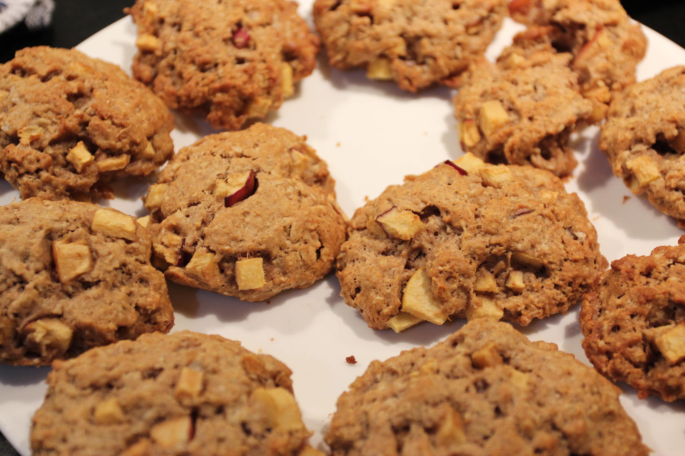 Effort: Easy15 mins (Prep), 14 mins (Bake)
Ingredients
Dry Ingredients
- 1 cup oatmeal
- ¾ all-purpose flour
- ½ teaspoon baking soda
- 1 stick (8 tablespoons) butter
- 1 teaspoon cinnamon
Wet Ingredients
- ½ of a large, red apple
- 1 egg
- ⅓ cup maple syrup
- ½ teaspoon vanilla extract
Preparation
- Preheat oven to 375 degrees Farenheit.
- Place stick of butter on counter so that it reaches room temperature.
- Dice half of the apple.
- Whip eggs and butter together first. Then combine all ingredients (other than apples) together in mixing bowl.
- Mix in apples.
- Scoop tablespoon-sized portions onto baking sheet.
- Bake for 14 minutes until golden brown.
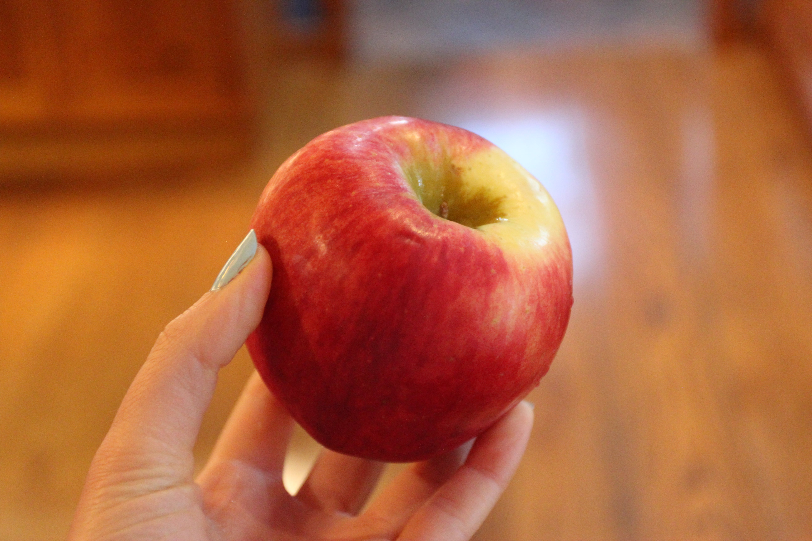
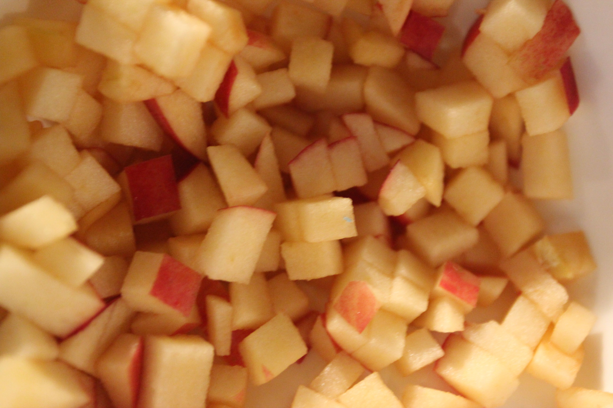
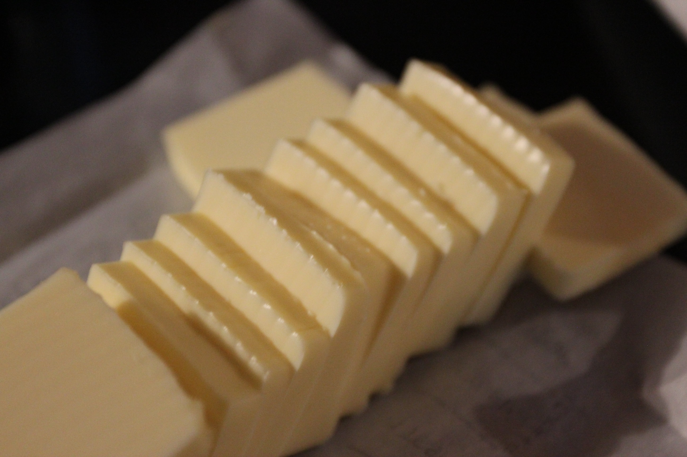
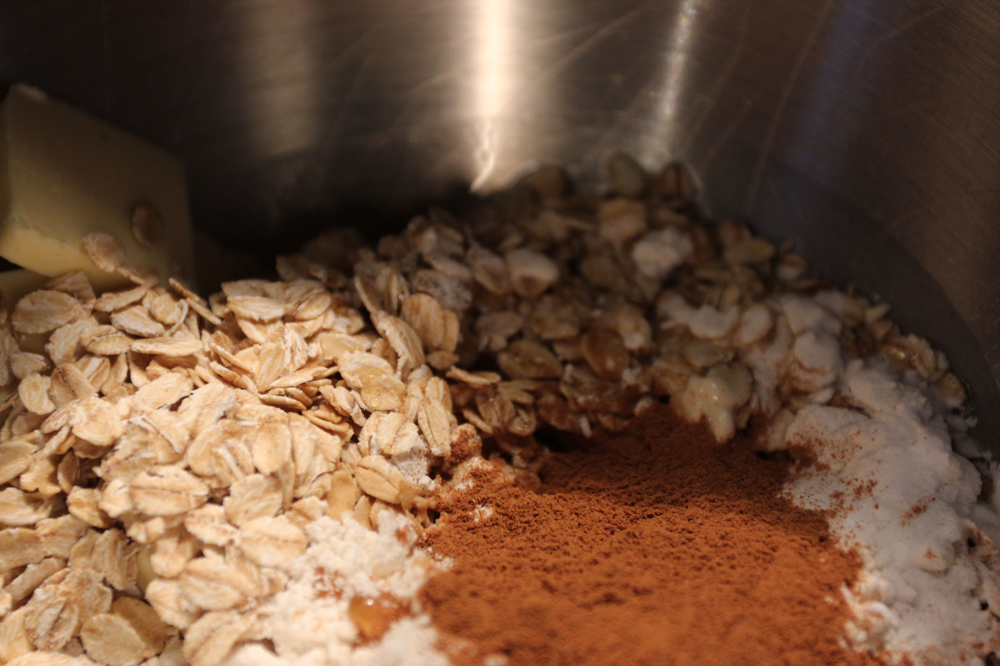
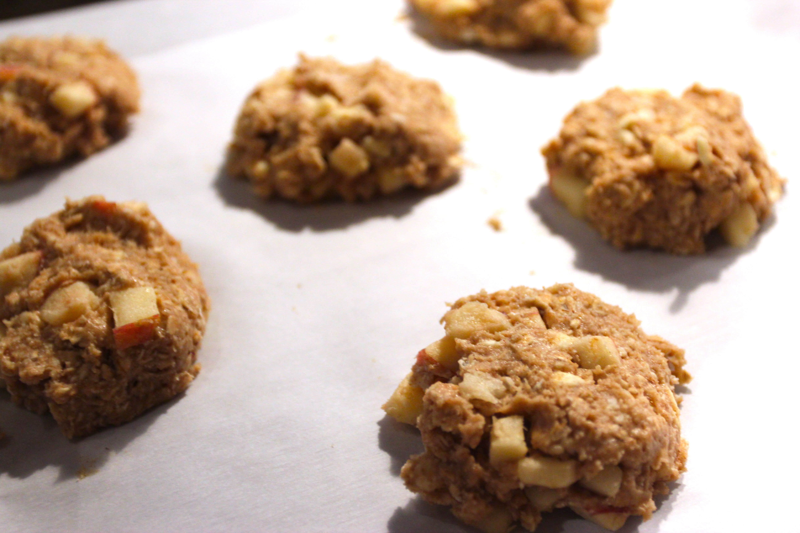
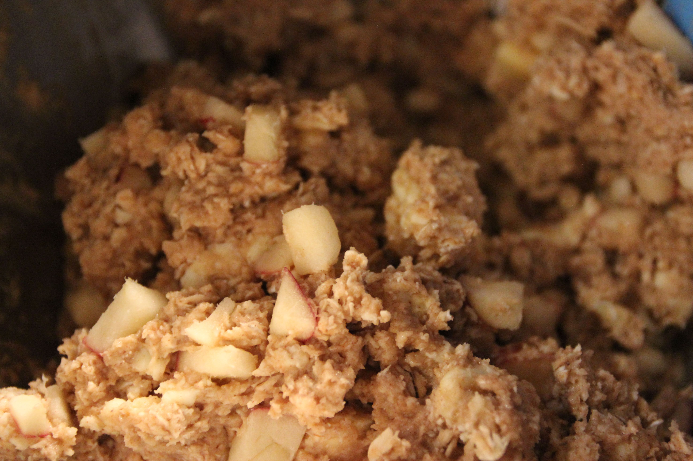
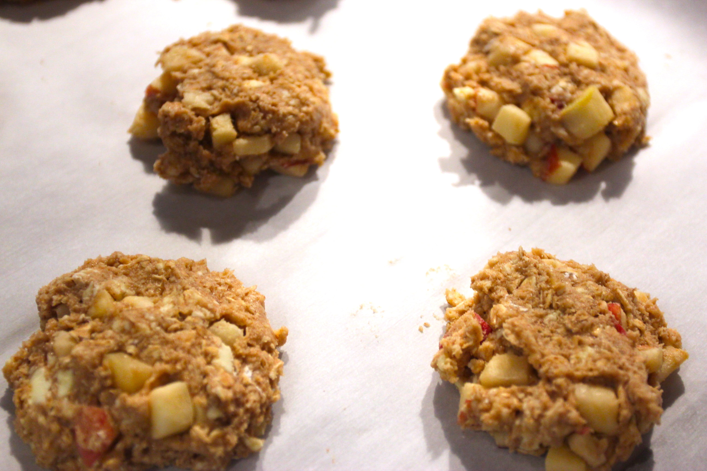
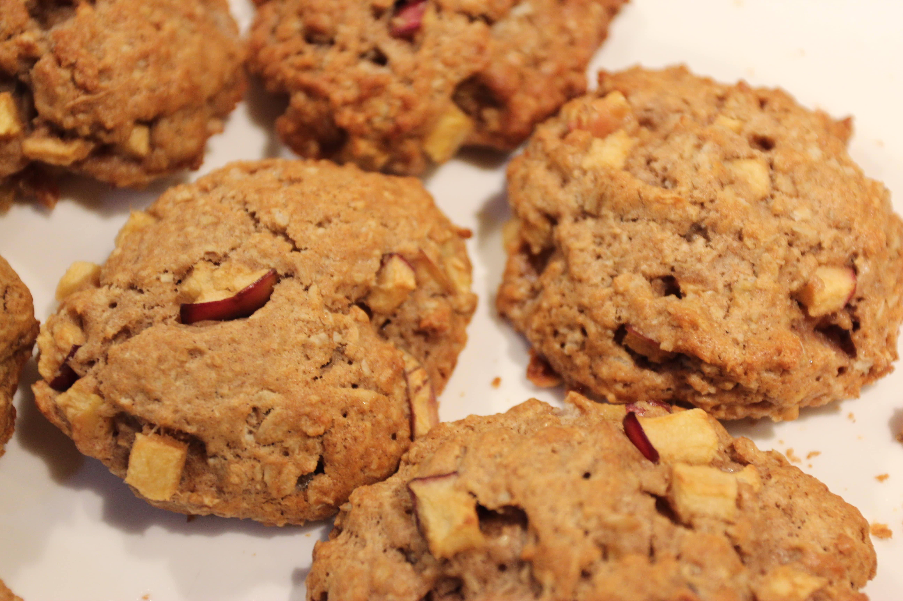
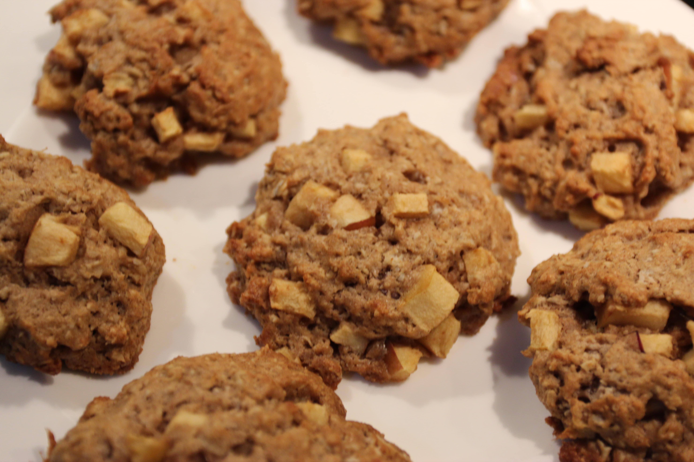
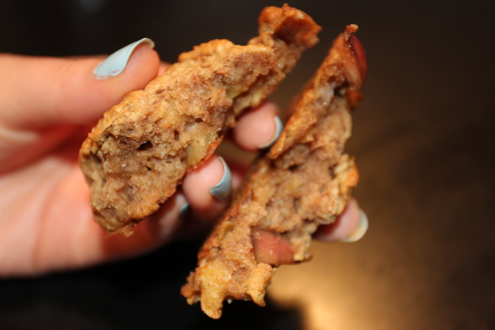